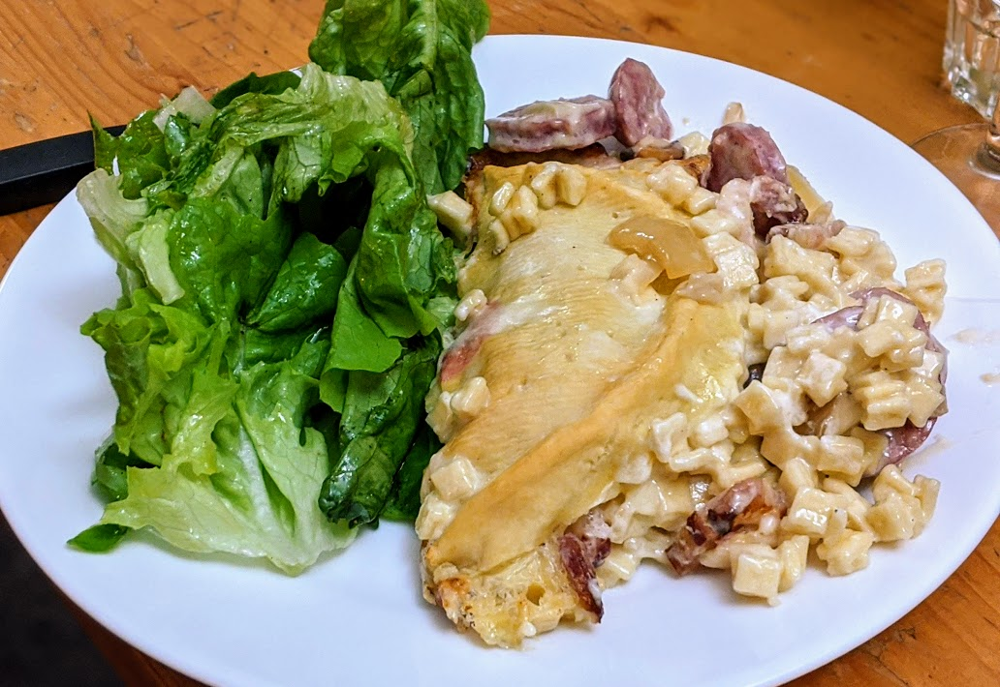

Croziflette

Pour 6 personnes :
- 400g de crozets
- 200g de lardons
- 8 diots
- 20cL de crème fraîche (épaisse)
- Un gros oignon
- Un reblochon
- Une demi-bouteille de vin blanc
- Poivre, huile d'olive
- Éplucher et émincer l'oignon. Le faire revenir dans de l'huile d'olive dans une poêle à bords assez hauts. Faire bouillir de l'eau dans une grosse casserole.
- Quand il commence à être translucide, ajouter les diots par-dessus. Les laisser quelques secondes comme ça en mélangeant, puis ajouter le vin blanc et faire cuire à feu moyen-fort. Il n'est pas nécessaire que ça recouvre, mais si c'est n'est pas le cas, remuer et retourner de temps en temps les diots pour que ce ne soit pas toujours la même partie des diots en dehors du jus de cuisson.
- Mettre les crozets dans l'eau bouillante, saler un peu. Les laisser le temps indiqué par le sachet (par défaut, 15 minutes). Les égoutter et les mettre de côté.
- Après la cuisson des crozets, faire cuire les lardons dans une poêle. Enlever l'huile (ou pas), ajouter la crème, mélanger et mettre à feu doux pendant quelques minutes.
- À ce stade, les diots ont dû cuire une petite demi-heure. Les égoutter, ajouter l'oignon dans la poêle de crème, et couper les diots en bouts de la taille d'une phalange de petit doigt.
- Mettre le four à préchauffer à 200°C. Tapisser un gros plat à four des bouts de diots, disposer les crozets sur le dessus, verser la crème et les lardons sur le dessus. Couper le reblochon en deux dans le sens de la largeur, le recouper pour faire des plus petits morceaux si on veut (mais c'est pas obligé), et le disposer sur le dessus du plat, pour que le côté croûte soit visible.
- Enfourner 20 minutes, déguster bien chaud avec une salade.
Retour à la liste des recettes